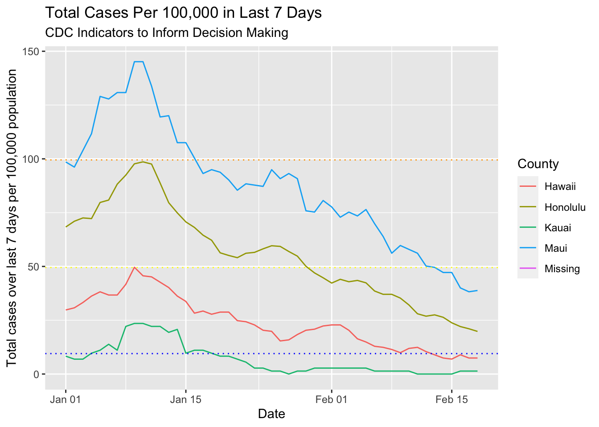
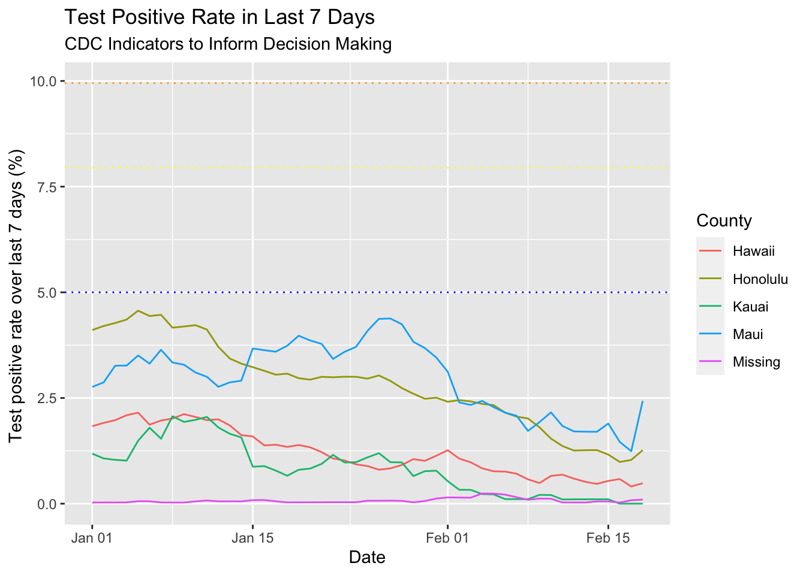

The CDC recently updated its school opening indicators. It’s really just a judgment call on how much transmission is happening in the communities. Since the data presented on the Hawaii DOH website isn’t easy to compare directly to the CDC numbers, I calculated the numbers myself.
I downloaded the data from the “How is Hawaii Doing at Flattening the Epidemic Curve?” Tableau figure on the Hawaii DOH COVID-19 data site. It has daily counts by county and the positive and total tests.
I like how this dataset requires pretty minimal processing. I did relabel the variables in Excel just to not have to deal with variables that have spaces in their names.
library(tidyverse)## ── Attaching packages ────────────────────────────── tidyverse 1.3.0 ──## ✓ ggplot2 3.3.2 ✓ purrr 0.3.4
## ✓ tibble 3.0.3 ✓ dplyr 1.0.2
## ✓ tidyr 1.1.2 ✓ stringr 1.4.0
## ✓ readr 1.3.1 ✓ forcats 0.5.0## ── Conflicts ───────────────────────────────── tidyverse_conflicts() ──
## x dplyr::filter() masks stats::filter()
## x dplyr::lag() masks stats::lag()library(lubridate)##
## Attaching package: 'lubridate'## The following objects are masked from 'package:base':
##
## date, intersect, setdiff, uniondat <- read_csv("../datasets/hawaiicovid20210221.csv")## Parsed with column specification:
## cols(
## County = col_character(),
## Date = col_character(),
## NewCases = col_double(),
## NewPositiveTests = col_double(),
## TotalTestEncounters = col_double()
## )dat## # A tibble: 1,771 x 5
## County Date NewCases NewPositiveTests TotalTestEncounters
## <chr> <chr> <dbl> <dbl> <dbl>
## 1 Hawaii 2/15/20 0 0 0
## 2 Hawaii 2/28/20 0 0 0
## 3 Hawaii 3/2/20 0 0 0
## 4 Hawaii 3/3/20 0 0 1
## 5 Hawaii 3/6/20 0 0 0
## 6 Hawaii 3/7/20 0 0 0
## 7 Hawaii 3/8/20 0 0 0
## 8 Hawaii 3/9/20 0 0 0
## 9 Hawaii 3/10/20 0 0 0
## 10 Hawaii 3/11/20 0 0 0
## # … with 1,761 more rowsdat$County <- factor(dat$County)
dat$Date <- mdy(dat$Date)I added in the 2019 census estimates for county population size, with a Missing category since there was one in the dataset.
county_pops <- data.frame(County = c("Hawaii", "Honolulu", "Kauai", "Maui", "Missing"),
pops = c(201513, 974563, 72293, 167417, NA))Ok, now for the calculation. I first added county population to the dataset. Then I grouped the data by county, calculated a cumulative sum and the cumulative sum from 7 days before. I took the difference to get the 7 day total cases. Then I divided that sum by the population of the county, and multipled by 100,000 to get the CDC metric. To make it easy to see the trends, I plotted the data and added horizontal lines at each threshold value.
dat %>% left_join(county_pops, by = "County") %>%
group_by(County) %>%
arrange(Date) %>%
mutate(total_cases = cumsum(NewCases)) %>%
mutate(cases_7d_ago = lag(total_cases, 7, default = 0)) %>%
mutate(cases_7d_sum_per100k = (total_cases-cases_7d_ago)/pops*100000) %>%
filter(Date > "2020-12-31") %>%
ggplot(aes(x = Date, y = cases_7d_sum_per100k, color = County)) +
geom_line() +
labs(title = "Total Cases Per 100,000 in Last 7 Days",
subtitle = "CDC Indicators to Inform Decision Making") +
ylab("Total cases over last 7 days per 100,000 population") +
geom_hline(yintercept = 9.5, linetype = "dotted", color = "blue") +
geom_hline(yintercept = 49.5, linetype = "dotted", color = "yellow") +
geom_hline(yintercept = 99.5, linetype = "dotted", color = "orange")## Warning: Removed 49 row(s) containing missing values (geom_path).
I also needed the test percentage positive over last 7 days. That one is basically the same method as the one before but instead of just calculating the cumulative sum of the tests, I had to do the positive and total test sums. Then I got the 7 day prior cumulative sum for both and calculated the difference. I divided the 7 day total positives by 7 day total tests and plotted those results.
dat %>%
group_by(County) %>%
arrange(Date) %>%
mutate(total_tests = cumsum(TotalTestEncounters)) %>%
mutate(total_positives = cumsum(NewPositiveTests)) %>%
mutate(total_tests_7d_ago = lag(total_tests, 7, default = 0)) %>%
mutate(total_positives_7d_ago = lag(total_positives, 7, default = 0)) %>%
mutate(test_positive_rate_7d = (total_positives-total_positives_7d_ago) /
(total_tests - total_tests_7d_ago)) %>%
select(County, Date, test_positive_rate_7d) %>%
filter(Date > "2020-12-31") %>%
ggplot(aes(x = Date, y = test_positive_rate_7d*100, color = County)) +
geom_line() +
labs(title = "Test Positive Rate in Last 7 Days",
subtitle = "CDC Indicators to Inform Decision Making") +
ylab("Test positive rate over last 7 days (%) ") +
geom_hline(yintercept = 5, linetype = "dotted", color = "blue") +
geom_hline(yintercept = 7.95, linetype = "dotted", color = "yellow") +
geom_hline(yintercept = 9.95, linetype = "dotted", color = "orange")
In retrospect, I think I could have done this without calculating the cumulative sum, just using the lag. I would have to create a function for that…
lagsum <- function(x, lag_start, lag_end) {
require(dplyr)
total = 0
for(i in lag_start:lag_end) {
total <- total + lag(x, i, default = 0)
}
return(total)
}And it works!
dat %>%
group_by(County) %>%
arrange(Date) %>%
# helper function lagsum method
mutate(total_cases_7d_lagsum = lagsum(NewCases, 0, 6)) %>%
# cumsum method
mutate(total_cases = cumsum(NewCases)) %>%
mutate(cases_7d_ago = lag(total_cases, 7, default = 0)) %>%
mutate(total_cases_7d_cumsum = (total_cases-cases_7d_ago)) %>%
# compare results
select(County,Date, total_cases_7d_lagsum, total_cases_7d_cumsum) %>%
filter(Date > "2021-02-14")## # A tibble: 20 x 4
## # Groups: County [5]
## County Date total_cases_7d_lagsum total_cases_7d_cumsum
## <fct> <date> <dbl> <dbl>
## 1 Hawaii 2021-02-15 14 14
## 2 Honolulu 2021-02-15 232 232
## 3 Kauai 2021-02-15 0 0
## 4 Maui 2021-02-15 79 79
## 5 Missing 2021-02-15 0 0
## 6 Hawaii 2021-02-16 18 18
## 7 Honolulu 2021-02-16 215 215
## 8 Kauai 2021-02-16 1 1
## 9 Maui 2021-02-16 67 67
## 10 Missing 2021-02-16 0 0
## 11 Hawaii 2021-02-17 15 15
## 12 Honolulu 2021-02-17 205 205
## 13 Kauai 2021-02-17 1 1
## 14 Maui 2021-02-17 64 64
## 15 Missing 2021-02-17 0 0
## 16 Hawaii 2021-02-18 15 15
## 17 Honolulu 2021-02-18 193 193
## 18 Kauai 2021-02-18 1 1
## 19 Maui 2021-02-18 65 65
## 20 Missing 2021-02-18 0 0After googling some more, I discovered the RcppRoll::roll_sum function. Anything with Rcpp in its name is intimidating, so for now, I’ll just use my homemade function.